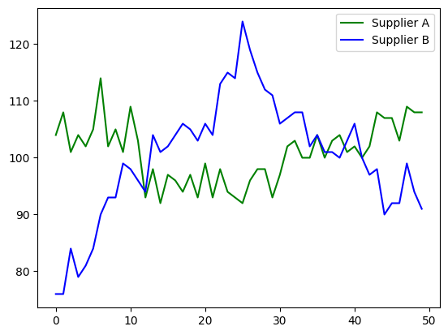
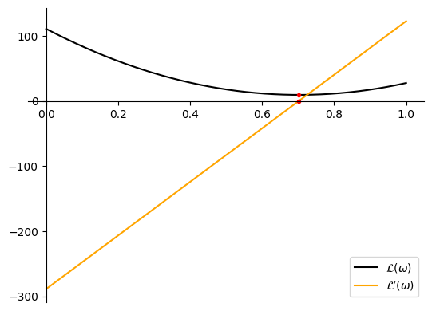

# A function to perform automatic differentiation.
from jax import grad
# A wrapped version of NumPy to use JAX primitives.
import jax.numpy as np
# A library for programmatic plot generation.
import matplotlib.pyplot as plt
# A library for data manipulation and analysis.
import pandas as pd
# A magic command to make output of plotting commands displayed inline within the Jupyter notebook.
%matplotlib inline Optimizing Functions of One Variable: Cost Minimization
In this assignment you will solve a simple optimization problem for a function of one variable. Given a dataset of historical prices of a product from two suppliers, your task is to identify what share of the product you should buy from each of the suppliers to make the best possible investment in the future. Stating the problem mathematically, you will construct a target function to minimize, evaluate its minimum and investigate how its derivative is connected with the result.
Important Note
Please do not delete any exercise cells or add your solutions in a different cell. Maintain your solution in the original cell provided, as altering this can disrupt the autograder.
Additionally, refrain from importing any new libraries, and do not import libraries within any graded cells—doing so will interfere with the autograder’s functionality.
Leaving any exercise unsolved (i.e., not replacing the ‘None’ values) will cause issues with the autograder. If you wish to submit your assignment without completing every exercise, for testing purposes, please follow the instructions here.
Table of Contents
## 1 - Statement of the Optimization Problem
### 1.1 - Description of the Problem
Your Company is aiming to minimize production costs of some goods. During the production process, an essential product P is used, which can be supplied from one of two partners - supplier A and supplier B. Your consultants requested the historical prices of product P from both suppliers A and B, which were provided as monthly averages for the period from February 2018 to March 2020.
Preparing Company Budget for the coming twelve months period, your plan is to purchase the same amount of product P monthly. Choosing the supplier, you noticed, that there were some periods in the past, when it would be more profitable to use supplier A (the prices of product P were lower), and other periods to work with supplier B. For the Budget model you can set some percentage of the goods to be purchased from supplier A (e.g. 60%) and the remaining part from supplier B (e.g. 40%), but this split should be kept consistent for the whole of the twelve months period. The Budget will be used in preparation for the contract negotiations with both suppliers.
Based on the historical prices, is there a particular percentage which will be more profitable to supply from Company A, and the remaining part from Company B? Or maybe it does not matter and you can work just with one of the suppliers?
### 1.2 - Mathematical Statement of the Problem
Denoting prices of the product P from Company A and Company B as \(p_A\) (USD) and \(p_B\) (USD) respectively, and the volume of the product to be supplied per month as \(n\) (units), the total cost in USD is:
\[f\left(\omega\right) = p_A \omega \,n+ p_B \left(1 - \omega\right) n,\]
where \(0\leq\omega\leq1\) is the parameter. If \(\omega = 1\), all goods will be supplied from Company A, and if \(\omega = 0\), from Company B. In case of \(0<\omega<1\), some percentage will be allocated to both.
As it is planned to keep the volume \(n\) constant over the next twelve months, in the mathematical model the common approach is to put \(n = 1\). You can do this, because nothing depends on the volume and the end result will be the same. Now the total cost will be simpler:
\[f\left(\omega\right) = p_A \omega+ p_B \left(1 - \omega\right) \tag{1}\]
Obviously, you do not know the future prices \(p_A\) and \(p_B\), only historical values (prices \(\{p_A^1, \cdots, p_A^k\}\) and \(\{p_B^1, \cdots, p_B^k\}\) for \(k\) months). And historically there were various periods of time when it was better to take \(\omega = 1\) (\(p_A^i < p_B^i\)) or \(\omega = 0\) (\(p_A^i >p_B^i\)). Is it possible now to choose some \(\omega\) value that would provide some evidence of minimum costs in the future?
This is a standard portfolio management (investment) problem well known in statistics, where based on the historical prices you need to make investment decision to maximize profit (minimize costs). Since statistics has not been covered in this Course, you do not need to understand the details about the function \(\mathcal{L}\left(\omega\right)\) (called loss function) to minimize, explained in the next paragraph.
The approach is to calculate \(f\left(\omega\right)\) for each of the historical prices \(p_A^i\) and \(p_B^i\), \(f^i\left(\omega\right)=p_A^i \omega+ p_B^i \left(1 - \omega\right)\). Then take an average of those values, \(\overline{f\left (\omega\right)}=\text{mean}\left(f^i\left(\omega\right)\right) = \frac{1}{k}\sum_{i=1}^{k}f^i\left(\omega\right)\) and look for such value of \(\omega\) which makes \(f^i\left(\omega\right)\) as “stable” as possible - varying as little as possible from the average \(\overline{f\left (\omega\right)}\). This means that you would want to minimize the sum of the differences \(\left(f^i \left(\omega\right) - \overline{f\left (\omega\right)}\right)\). As the differences can be negative or positive, a common approach is to take the squares of those and take an average of the squares:
\[\mathcal{L}\left(\omega\right) = \frac{1}{k}\sum_{i=1}^{k}\left(f^i \left(\omega\right) - \overline{f\left (\omega\right)}\right)^2\tag{2}\]
In statistics \(\mathcal{L}\left(\omega\right)\) is called a variance of \(\{f^1 \left(\omega\right), \cdots , f^k \left(\omega\right)\}\). The aim is to minimize the variance \(\mathcal{L}\left(\omega\right)\), where \(\omega\in\left[0, 1\right]\). Again, do not worry if you do not understand deeply why particularly this function \(\mathcal{L}\left(\omega\right)\) was chosen. You might think if it is logical to minimize an average \(\overline{f\left (\omega\right)}\), but risk management theory states that in this problem variance needs to be optimized.
Statistical theory shows that there is an \(\omega\in\left[0, 1\right]\) value which minimizes function \(\mathcal{L}\left(\omega\right)\) and it can be found using some properties of the datasets \(\{p_A^1, \cdots, p_A^k\}\) and \(\{p_B^1, \cdots, p_B^k\}\). However, as this is not a Course about statistics, the example is taken to illustrate an optimization problem of one variable based on some dataset. It is a chance for you to check your understanding and practice this week material.
Now let’s upload a dataset and explore if it is possible to find a minimum point for the corresponding function \(\mathcal{L}\left(\omega\right)\).
## 2 - Optimizing Function of One Variable in Python
Let’s import all of the required packages. In addition to the ones you have been using in this Course before, you will need to import pandas library. It is a commonly used package for data manipulation and analysis.
Load the unit tests defined for this notebook.
import w1_unittest
# Please ignore the warning message about GPU/TPU if it appears.WARNING:jax._src.lib.xla_bridge:No GPU/TPU found, falling back to CPU. (Set TF_CPP_MIN_LOG_LEVEL=0 and rerun for more info.)### 2.2 - Open and Analyze the Dataset
Historical prices for both suppliers A and B are saved in the file data/prices.csv. To open it you can use pandas function read_csv. This example is very simple, there is no need to use any other parameters.
df = pd.read_csv('data/prices.csv')The data is now saved in the variable df as a DataFrame, which is the most commonly used pandas object. It is a 2-dimensional labeled data structure with columns of potentially different types. You can think of it as a table or a spreadsheet. Full documentation can be found here.
View the data with a standard print function:
print(df) date price_supplier_a_dollars_per_item \
0 1/02/2016 104
1 1/03/2016 108
2 1/04/2016 101
3 1/05/2016 104
4 1/06/2016 102
5 1/07/2016 105
6 1/08/2016 114
7 1/09/2016 102
8 1/10/2016 105
9 1/11/2016 101
10 1/12/2016 109
11 1/01/2017 103
12 1/02/2017 93
13 1/03/2017 98
14 1/04/2017 92
15 1/05/2017 97
16 1/06/2017 96
17 1/07/2017 94
18 1/08/2017 97
19 1/09/2017 93
20 1/10/2017 99
21 1/11/2017 93
22 1/12/2017 98
23 1/01/2018 94
24 1/02/2018 93
25 1/03/2018 92
26 1/04/2018 96
27 1/05/2018 98
28 1/06/2018 98
29 1/07/2018 93
30 1/08/2018 97
31 1/09/2018 102
32 1/10/2018 103
33 1/11/2018 100
34 1/12/2018 100
35 1/01/2019 104
36 1/02/2019 100
37 1/03/2019 103
38 1/04/2019 104
39 1/05/2019 101
40 1/06/2019 102
41 1/07/2019 100
42 1/08/2019 102
43 1/09/2019 108
44 1/10/2019 107
45 1/11/2019 107
46 1/12/2019 103
47 1/01/2020 109
48 1/02/2020 108
49 1/03/2020 108
price_supplier_b_dollars_per_item
0 76
1 76
2 84
3 79
4 81
5 84
6 90
7 93
8 93
9 99
10 98
11 96
12 94
13 104
14 101
15 102
16 104
17 106
18 105
19 103
20 106
21 104
22 113
23 115
24 114
25 124
26 119
27 115
28 112
29 111
30 106
31 107
32 108
33 108
34 102
35 104
36 101
37 101
38 100
39 103
40 106
41 100
42 97
43 98
44 90
45 92
46 92
47 99
48 94
49 91 To print a list of the column names use columns attribute of the DataFrame:
print(df.columns)Index(['date', 'price_supplier_a_dollars_per_item',
'price_supplier_b_dollars_per_item'],
dtype='object')Reviewing the displayed table and the column names you can conclude that monthly prices are provided (in USD) and you only need the data from the columns price_supplier_a_dollars_per_item and price_supplier_b_dollars_per_item. In real life the datasets are significantly larger and require a proper review and cleaning before injection into models. But this is not the focus of this Course.
To access the values of one column of the DataFrame you can use the column name as an attribute. For example, the following code will output date column of the DataFrame df:
df.date0 1/02/2016
1 1/03/2016
2 1/04/2016
3 1/05/2016
4 1/06/2016
5 1/07/2016
6 1/08/2016
7 1/09/2016
8 1/10/2016
9 1/11/2016
10 1/12/2016
11 1/01/2017
12 1/02/2017
13 1/03/2017
14 1/04/2017
15 1/05/2017
16 1/06/2017
17 1/07/2017
18 1/08/2017
19 1/09/2017
20 1/10/2017
21 1/11/2017
22 1/12/2017
23 1/01/2018
24 1/02/2018
25 1/03/2018
26 1/04/2018
27 1/05/2018
28 1/06/2018
29 1/07/2018
30 1/08/2018
31 1/09/2018
32 1/10/2018
33 1/11/2018
34 1/12/2018
35 1/01/2019
36 1/02/2019
37 1/03/2019
38 1/04/2019
39 1/05/2019
40 1/06/2019
41 1/07/2019
42 1/08/2019
43 1/09/2019
44 1/10/2019
45 1/11/2019
46 1/12/2019
47 1/01/2020
48 1/02/2020
49 1/03/2020
Name: date, dtype: objectLoad the historical prices of supplier A and supplier B into variables prices_A and prices_B, respectively. Convert the price values into NumPy arrays with elements of type float32 using np.array function.
Hint
-
The corresponding prices are in the DataFrame
df, columnsprice_supplier_a_dollars_per_itemandprice_supplier_b_dollars_per_item. -
Conversion into the
NumPyarray can be performed with the functionnp.array.
### START CODE HERE ### (~ 4 lines of code)
prices_A = np.array(df['price_supplier_a_dollars_per_item'])
prices_B = np.array(df['price_supplier_b_dollars_per_item'])
prices_A = prices_A.astype('float32')
prices_B = prices_B.astype('float32')
### END CODE HERE #### Print some elements and mean values of the prices_A and prices_B arrays.
print("Some prices of supplier A:", prices_A[0:5])
print("Some prices of supplier B:", prices_B[0:5])
print("Average of the prices, supplier A:", np.mean(prices_A))
print("Average of the prices, supplier B:", np.mean(prices_B))Some prices of supplier A: [104. 108. 101. 104. 102.]
Some prices of supplier B: [76. 76. 84. 79. 81.]
Average of the prices, supplier A: 100.799995
Average of the prices, supplier B: 100.0Expected Output
Some prices of supplier A: [104. 108. 101. 104. 102.]
Some prices of supplier B: [76. 76. 84. 79. 81.]
Average of the prices, supplier A: 100.799995
Average of the prices, supplier B: 100.0w1_unittest.test_load_and_convert_data(prices_A, prices_B) All tests passed
Average prices from both suppliers are similar. But if you will plot the historical prices, you will see that there were periods of time when the prices were lower for supplier A, and vice versa.
fig = plt.figure()
ax = fig.add_subplot(1, 1, 1)
plt.plot(prices_A, 'g', label="Supplier A")
plt.plot(prices_B, 'b', label="Supplier B")
plt.legend()
plt.show()
Based on the historical data, can you tell which supplier it will be more profitable to work with? As discussed in the section 1.3, you need to find such an \(\omega \in \left[0, 1\right]\) which will minimize function \((2)\).
### 2.3 - Construct the Function \(\mathcal{L}\) to Optimize and Find its Minimum Point
Calculate f_of_omega, corresponding to the \(f^i\left(\omega\right)=p_A^i \omega+ p_B^i \left(1 - \omega\right)\). Prices \(\{p_A^1, \cdots, p_A^k\}\) and \(\{p_B^1, \cdots, p_B^k\}\) can be passed in the arrays pA and pB. Thus, multiplying them by the scalars omega and 1 - omega and adding together the resulting arrays, you will get an array containing \(\{f^1\left(\omega\right), \cdots, f^k\left(\omega\right)\}\).
Then array f_of_omega can be taken to calculate L_of_omega, according to the expression \((2)\):
\[\mathcal{L}\left(\omega\right) = \frac{1}{k}\sum_{i=1}^{k}\left(f^i \left(\omega\right) - \overline{f\left (\omega\right)}\right)^2\]
def f_of_omega(omega, pA, pB):
### START CODE HERE ### (~ 1 line of code)
f = pA * omega + pB * (1 - omega)
### END CODE HERE ###
return f
def L_of_omega(omega, pA, pB):
return 1/len(f_of_omega(omega, pA, pB)) * np.sum((f_of_omega(omega, pA, pB) - np.mean(f_of_omega(omega, pA, pB)))**2)print("L(omega = 0) =",L_of_omega(0, prices_A, prices_B))
print("L(omega = 0.2) =",L_of_omega(0.2, prices_A, prices_B))
print("L(omega = 0.8) =",L_of_omega(0.8, prices_A, prices_B))
print("L(omega = 1) =",L_of_omega(1, prices_A, prices_B))L(omega = 0) = 110.72
L(omega = 0.2) = 61.1568
L(omega = 0.8) = 11.212797
L(omega = 1) = 27.48Expected Output
L(omega = 0) = 110.72
L(omega = 0.2) = 61.1568
L(omega = 0.8) = 11.212797
L(omega = 1) = 27.48w1_unittest.test_f_of_omega(f_of_omega) All tests passed
Analysing the output above, you can notice that values of the function \(\mathcal{L}\) are decreasing for \(\omega\) increasing from \(0\) to \(0.2\), then to \(0.8\), but there is an increase of the function \(\mathcal{L}\) when \(\omega = 1\). What will be the \(\omega\) giving the minimum value of the function \(\mathcal{L}\)?
In this simple example \(\mathcal{L}\left(\omega\right)\) is a function of one variable and the problem of finding its minimum point with a certain accuracy is a trivial task. You just need to calculate function values for each \(\omega = 0, 0.001, 0.002, \cdots , 1\) and find minimum element of the resulting array.
Function L_of_omega will not work if you will pass an array instead of a single value of omega (it was not designed for that). It is possible to rewrite it in a way that it would be possible, but here there is no need in that right now - you can calculate the resulting values in the loop as there will be not as many of them.
Evaluate function L_of_omega for each of the elements of the array omega_array and pass the result into the corresponding element of the array L_array with the function .at[<index>].set(<value>).
Note: jax.numpy has been uploaded instead of the original NumPy. Up to this moment jax functionality has not been actually used, but it will be called in the cells below. Thus there was no need to upload both versions of the package, and you have to use .at[<index>].set(<value>) function to update the array.
# Parameter endpoint=True will allow ending point 1 to be included in the array.
# This is why it is better to take N = 1001, not N = 1000
N = 1001
omega_array = np.linspace(0, 1, N, endpoint=True)
# This is organised as a function only for grading purposes.
def L_of_omega_array(omega_array, pA, pB):
N = len(omega_array)
L_array = np.zeros(N)
for i in range(N):
### START CODE HERE ### (~ 2 lines of code)
L = L_of_omega(omega_array[i], pA, pB)
L_array = L_array.at[i].set(L)
### END CODE HERE ###
return L_array
L_array = L_of_omega_array(omega_array, prices_A, prices_B)print("L(omega = 0) =",L_array[0])
print("L(omega = 1) =",L_array[N-1])L(omega = 0) = 110.72
L(omega = 1) = 27.48Expected Output
L(omega = 0) = 110.72
L(omega = 1) = 27.48w1_unittest.test_L_of_omega_array(L_of_omega_array) All tests passed
Now a minimum point of the function \(\mathcal{L}\left(\omega\right)\) can be found with a NumPy function argmin(). As there were \(N = 1001\) points taken in the segment \(\left[0, 1\right]\), the result will be accurate to three decimal places:
i_opt = L_array.argmin()
omega_opt = omega_array[i_opt]
L_opt = L_array[i_opt]
print(f'omega_min = {omega_opt:.3f}\nL_of_omega_min = {L_opt:.7f}')omega_min = 0.702
L_of_omega_min = 9.2497196This result means that, based on the historical data, \(\omega = 0.702\) is expected to be the most profitable choice for the share between suppliers A and B. It is reasonable to plan \(70.2\%\) of product P to be supplied from Company A, and \(29.8\%\) from Company B.
If you would like to improve the accuracy, you just need to increase the number of points N. This is a very simple example of a model with one parameter, resulting in optimization of a function of one variable. It is computationally cheap to evaluate it in many points to find the minimum with certain accuracy. But in machine learning the models have hundreds of parameters, using similar approach you would need to perform millions of target function evaluations. This is not possible in most of the cases, and that’s where Calculus with its methods and approaches comes into play.
In the next weeks of this Course you will learn how to optimize multivariate functions using differentiation. But for now as you are on the learning curve, let’s evaluate the derivative of the function \(\mathcal{L}\left(\omega\right)\) at the points saved in the array omega_array to check that at the minimum point the derivative is actually the closest to zero.
For each \(\omega\) in the omega_array calculate \(\frac{d\mathcal{L}}{d\omega}\) using grad() function from JAX library. Remember that you need to pass the function which you want to differentiate (here \(\mathcal{L}\left(\omega\right)\)) as an argument of grad() function and then evaluate the derivative for the corresponding element of the omega_array. Then pass the result into the corresponding element of the array dLdOmega_array with the function .at[<index>].set(<value>).
Hint
-
Function \(\mathcal{L}\left(\omega\right)\) is implemented in the code as
L_of_omega.
# This is organised as a function only for grading purposes.
def dLdOmega_of_omega_array(omega_array, pA, pB):
N = len(omega_array)
dLdOmega_array = np.zeros(N)
for i in range(N):
### START CODE HERE ### (~ 2 lines of code)
dLdOmega = grad(L_of_omega)(omega_array[i], pA, pB)
dLdOmega_array = dLdOmega_array.at[i].set(dLdOmega)
### END CODE HERE ###
return dLdOmega_array
dLdOmega_array = dLdOmega_of_omega_array(omega_array, prices_A, prices_B)print("dLdOmega(omega = 0) =",dLdOmega_array[0])
print("dLdOmega(omega = 1) =",dLdOmega_array[N-1])dLdOmega(omega = 0) = -288.96
dLdOmega(omega = 1) = 122.47999Expected Output
dLdOmega(omega = 0) = -288.96
dLdOmega(omega = 1) = 122.47999w1_unittest.test_dLdOmega_of_omega_array(dLdOmega_of_omega_array) All tests passed
Now to find the closest value of the derivative to \(0\), take absolute values \(\left|\frac{d\mathcal{L}}{d\omega}\right|\) for each omega and find minimum of them.
i_opt_2 = np.abs(dLdOmega_array).argmin()
omega_opt_2 = omega_array[i_opt_2]
dLdOmega_opt_2 = dLdOmega_array[i_opt_2]
print(f'omega_min = {omega_opt_2:.3f}\ndLdOmega_min = {dLdOmega_opt_2:.7f}')omega_min = 0.702
dLdOmega_min = -0.1290760The result is the same: \(\omega = 0.702\). Let’s plot \(\mathcal{L}\left(\omega\right)\) and \(\frac{d\mathcal{L}}{d\omega}\) to visualize the graphs of them, minimum point of the function \(\mathcal{L}\left(\omega\right)\) and the point where its derivative is around \(0\):
fig = plt.figure()
ax = fig.add_subplot(1, 1, 1)
# Setting the axes at the origin.
ax.spines['left'].set_position('zero')
ax.spines['bottom'].set_position('zero')
ax.spines['right'].set_color('none')
ax.spines['top'].set_color('none')
ax.xaxis.set_ticks_position('bottom')
ax.yaxis.set_ticks_position('left')
plt.plot(omega_array, L_array, "black", label = "$\mathcal{L}\\left(\omega\\right)$")
plt.plot(omega_array, dLdOmega_array, "orange", label = "$\mathcal{L}\'\\left(\omega\\right)$")
plt.plot([omega_opt, omega_opt_2], [L_opt,dLdOmega_opt_2], 'ro', markersize=3)
plt.legend()
plt.show()
Congratulations, you have finished the assignment for this week! This example illustrates how optimization problems may appear in real life, and gives you an opportunity to explore the simple case of minimizing a function with one variable. Now it is time to learn about optimization of multivariate functions!